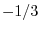
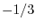

Next: Bibliography
Up: 議論と発展
Previous: 最適区間幅の理論値のスケーリング則と発散
Contents
Index
 回の試行数のスパイク統計
回の試行数のスパイク統計 ,
,  を用いて, 試行数が
を用いて, 試行数が 回の場合の最適幅を,
外挿したコスト関数
回の場合の最適幅を,
外挿したコスト関数
から推定することができる. これによりデータから次の２つの数値を推定できる.
(i) スケーリング指数:
最適幅の試行数に関するスケーリング指数を調べることができる. 指数が のときは背後のレートは微分不可能であり, のときには微分の存在するなめらかな確率過程であると推定される.
(ii) ヒストグラム作成に必要な最小試行回数:
転移点で発散やとびを示す指標を用いることで, 転移点を与える
のときは背後のレートは微分不可能であり, のときには微分の存在するなめらかな確率過程であると推定される.
(ii) ヒストグラム作成に必要な最小試行回数:
転移点で発散やとびを示す指標を用いることで, 転移点を与える を推定することができる.
これにより実験者は少ない試行数からヒストグラム作成に最低限必要な試行数を予測することができる.
を推定することができる.
これにより実験者は少ない試行数からヒストグラム作成に最低限必要な試行数を予測することができる.
Next: Bibliography
Up: 議論と発展
Previous: 最適区間幅の理論値のスケーリング則と発散
Contents
Index
hideaki
2006-07-11